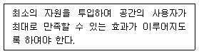
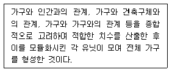
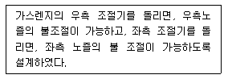
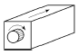
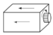
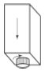
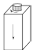
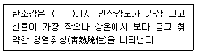
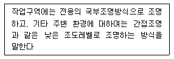
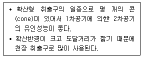

실내건축기사(구) (2016-03-06 기출문제)
1과목: 실내디자인론
1. 다음 중 유기적(organic) 디자인의 포괄적인 의미로 가장 알맞은 것은?
- 천연재료를 사용하는 디자인
- 자연 생명체의 원리와 질서를 적용하는 디자인
- 자연형태에 가까운 곡선 형태를 많이 사용하는 디자인
- 나무, 눈의 결정체 등 자연생명체의 형태를 적용하는 디자인
(정답률: 65%)

2. 리듬의 효과를 위해 사용되는 요소에 속하지 않는 것은?
- 반복
- 방사
- 점진
- 조화
(정답률: 61%)
3. 실내장식물에 관한 설명으로 옳지 않은 것은?
- 수석이나 수족관은 감상위주의 장식물에 속한다.
- 실내장식물은 기능이 없으므로 장식적인 효과만을 고려한다.
- 실내장식물은 공간을 강조하고 흥미를 높여주는 효과가 있다.
- 실내장식물은 개성을 나타내는 자기표현의 수단이 될수 있다.
(정답률: 86%)
4. 황금비를 바탕으로 한 대수 개념의 모듈 체계인 모듈러(modulor)의 개념을 만든 건축가는?
- 알바 알토
- 르 꼬르뷔제
- 미스 반 데 로에
- 프랭크 로이드 라이트
(정답률: 85%)
5. 선의 종류별 조형효과에 관한 설명으로 옳은 것은?
- 사선은 약동감, 생동감의 느낌을 준다.
- 수평선은 상승감, 존엄성의 느낌을 준다.
- 곡선은 미묘함, 불명료함 등 남성적인 느낌을 준다.
- 수직선은 평화, 침착, 고요 등 주로 정적인 느낌을 준다.
(정답률: 81%)
6. 실내 기본요소 중 천장에 관한 설명으로 옳은 것은?
- 바닥에 함께 실내공간을 구성하는 수직적 요소이다.
- 바닥이나 벽에 비해 접촉빈도가 높으며 공간의 크기에 영향을 끼친다.
- 바닥은 시대와 양식에 의한 변화가 현저한데 비해 천장은 매우 고정적이다.
- 천장을 낮추면 친근하고 아늑한 공간이 되고 높이면 확대감을 줄 수 있다.
(정답률: 81%)
7. 부엌 작업대의 배치 유형 중 ㄱ자형에 관한 설명으로 옳지 않은 것은?
- 일반적으로 작업대의 길이는 1,500mm 미만이 적합하다.
- 작업을 위한 동작 범위가 일정한 범위에 놓이므로 편리하다.
- 한 쪽 면에 싱크대를, 다른 면에 가스레인지를 설치하면 능률적이다.
- 여유공간에 식탁을 배치하여 식당 겸 부엌으로 사용하는 경우에 적합하다.
(정답률: 66%)
8. 연속적인 주제를 시간적인 연속성을 가지고 선형으로 연출하는 전시방법은?
- 하모니카 전시
- 파노라마 전시
- 아일랜드 전시
- 아이맥스 전시
(정답률: 83%)
9. 개구부에 관한 설명으로 옳지 않은 것은?
- 한 공간과 인접된 공간을 연결시킨다.
- 가구배치와 동선계획에 영향을 미친다.
- 벽체를 대신하여 건축구조 요소로 사용된다.
- 창의 크기와 위치, 형태는 창에서 보이는 시야의 특징을 결정한다.
(정답률: 79%)
10. 다음 설명에 알맞은 실내디자인의 조건은?

- 기능적 조건
- 심미적 조건
- 경제적 조건
- 물리·환경적 조건
(정답률: 81%)
11. 벽의 상부에 길게 설치된 반사상자 안에 광원을 설치, 모든 빛이 하부로 향하도록 하는 건축화 조명방식은?
- 코브조명
- 광창조명
- 코니스조명
- 광천장조명
(정답률: 61%)
12. 사무소의 실단위계획 중 개방식 배치에 관한 설명으로 옳지 않은 것은?
- 전면적을 유효하게 이용할 수 있다.
- 개인의 프라이버시가 결여되기 쉽다.
- 방의 길이나 깊이에 변화를 줄 수 있다.
- 자연채광 외에 별도의 인공조명이 불필요하다.
(정답률: 78%)
13. 상점건축에서 쇼윈도우, 출입구 및 홀의 입구 부분을 포함한 평면적인 구성요소와 아케이드, 광고판, 사인, 외부장치를 포함한 입체적인 구성요소의 총체를 의미하는 것은?
- 파사드(facade)
- 스테이지(stage)
- 쇼케이스(show case)
- P.O.P(point of purchase)
(정답률: 77%)
14. 주택의 현관에 관한 설명으로 옳지 않은 것은?
- 거실이나 침실의 내부와 직접 연결되도록 배치한다.
- 복도나 계단실 같은 연결 통로에 근접시켜 배치한다.
- 현관의 위치는 도로와의 관계, 대지의 형태 등에 의해 결정된다.
- 바닥 마감재로는 내수성이 강한 석재, 타일, 인조석 등이 바람직하다.
(정답률: 83%)
15. 다음 설명에 알맞은 가구의 종류는?

- 시스템 가구
- 붙박이 가구
- 그리드 가구
- 수납용 가구
(정답률: 80%)
16. 다음 중 실내디자인 과정에서 실시설계 단계의 내용에 속하지 않는 것은?
- 창호도 작성
- 평면도 작성
- 재료 마감표 작성
- 스터디 모델링(study modeling) 작업 실시
(정답률: 73%)
17. 상점의 공간구성 중 판매부분에 속하지 않는 것은?
- 통로공간
- 서비스공간
- 상품관리공간
- 상품전시공간
(정답률: 70%)
18. 게슈탈트 그룹핑 법칙의 구성에 속하지 않는 것은?
- 폐쇄성
- 근접성
- 다양성
- 유사성
(정답률: 67%)
19. 사선이 2개 이상의 평행선으로 중단되면 서로 어긋나 보이는 방향의 착시 사례에 속하는 것은?
- 쾨니히 목걸이
- 펜로즈 삼각형
- 자스트로 도형
- 포겐도로프 도형
(정답률: 71%)
20. 상점 쇼윈도의 눈부심 방지 방법으로 옳지 않은 것은?
- 곡면유리를 사용한다.
- 쇼윈도 상부에 차양을 설치하여 햇빛을 차단한다.
- 내부 조도를 외부 도로면의 조도보다 어둡게 처리한다.
- 유리를 경사지게 처리하여 외부영상이 시야에 들어오지 않게 한다.
(정답률: 73%)
2과목: 색채학
21. 오스트발트 표색계의 순색량은 무엇으로 표기하는가?
- C
- W
- H
- B
(정답률: 70%)
22. 먼셀 색입체를 무채색 축을 통하여 수직으로 절단한 단면은?
- 등색상면
- 등명도면
- 등채도면
- 등면도면과 등채도면
(정답률: 44%)
23. 채도의 속성에 관한 설명으로 틀린 것은?
- 색의 강하고 약한 것을 나타낸다.
- 색의 맑고 흐린 것을 나타낸다.
- 색의 밝고 어두운 것을 나타낸다.
- 색의 순도를 나타낸다.
(정답률: 63%)
24. 스펙트럼(Spectrum)에 관한 설명으로 틀린 것은?
- 파장이 길면 굴절률도 크고 파장이 짧으면 굴절률도 적다.
- 스펙트럼은 1666년 Newton이 프리즘으로 실험하여 광학적으로 증명하였다.
- 스펙트럼이란 무지개의 색과 같이 연속된 색의 띠를 말한다.
- 모든 발광체의 스펙트럼은 모두 같지 않으며, 그 빛의 성질에 따라 파장의 범위를 지닌다.
(정답률: 74%)
25. 오스트발트 표색계에 대한 설명으로 틀린 것은?
- B에서 W방향으로 a, c, e, g, i, l, n, p로 나누어 표기한다.
- 등색상 삼각형에서 BC와 평행선상에 있는 색들은 백색량이 같은 색계열이다.
- 등색상 삼각형에서 WB와 평행선상에 있는 색들은 순색량이 같은 색계열이다.
- WB측에서 백색의 혼량비는 베버와 페흐너의 법칙에 따라 등비급수적인 변화를 한다.
(정답률: 51%)
26. 오스트발트의 색채조화에서 등색상 3각형의 C와 B의 평행선상에 있는 색은?
- 등백 계열
- 등흑 계열
- 등순 계열
- 등흑 계열과 무채색
(정답률: 54%)
27. 물체표면의 색은 빛이 각 파장에 어떠한 비율로 반사되는가에 따라 판단되는데 이것을 무엇이라 하는가?
- 분광분포율
- 분광반사율
- 분광조성
- 분광
(정답률: 78%)
28. 정량적 색채 조화론으로 1944년에 발표되었으며, 고전적인 색채조화의 기하학적 공식화, 색채조화의 면적, 색채조화에 적용되는 심미도 등의 내용으로 구성되어 있는 것은?
- 슈브릴(M.E.Chevreul)의 조화론
- 저드(judd)의 조화론
- 문(P.Moon)과 스펜서(D.E.Spencer)의 조화론
- 그레이브스(M.Graves)의 조화론
(정답률: 70%)
29. 다음 중 가장 명도차가 큰 배색은?
- 파랑 – 빨강
- 연두 - 청록
- 파랑 – 주황
- 노랑 – 녹색
(정답률: 38%)
30. 오스트발트의 조화론 중 등백계열 조화에 해당되는 것은?
- pa-ia-ca
- pa-pg-pn
- ca-ga-ge
- gc-lg-pl
(정답률: 65%)
31. 먼셀 색체계에서 명도의 설명으로 틀린 것은?
- 명도가 0에 해당하는 검정은 존재하지 않는다.
- 색의 밝고 어두움을 나타낸다.
- 인간의 눈은 색의 삼속성 중에서 명도에 대한 감각이 가장 둔하다.
- 명도가 10에 해당하는 물체색은 존재하지 않는다.
(정답률: 63%)
32. 색채계획에 있어서 가장 요구되는 디자이너의 자질은?
- 즉흥적이고 연상적인 감각을 가져야 한다.
- 기능성에 주안을 둔 과학적, 이성적 처리 능력이 필요하다.
- 감각적인 것에 치중하여야 한다.
- 심미적인 관점에서 계획해야 한다.
(정답률: 67%)
33. 감산혼합의 결과 중 올바른 것은?
- 자주 + 노랑 = 빨강
- 시안 + 자주 = 초록
- 시안 + 노랑 = 파랑
- 빨강 + 자주 = 주황
(정답률: 48%)
34. 황색이나 레몬색에서 과일냄새를 느끼는 것과 같은 감각현상은?
- 시인성
- 상징성
- 공감각
- 시감도
(정답률: 48%)
35. 모니터의 색온도에 관한 설명으로 틀린 것은?
- 색온도의 단위는 K(Kelvin)를 사용하고, 사용자가 임의로 모니터의 색온도를 설정할 수 있다.
- 모니터의 색온도가 높아지면 전반적으로 불그스레한 느낌을 준다.
- 자연에 가까운 색을 구현하기 위해서는 모니터의 색온도를 6500K로 설정하는 것이 좋다.
- 모니터의 색온도가 9300K로 설정되면 흰색이나 회색 계열의 색들은 청색이나 녹색조의 색을 띈다.
(정답률: 57%)
36. 다음 색채계획 과정 중 옳은 것은?
- 색채환경분석 → 색채심리분석 → 색채전달계획 → 디자인의 적용
- 색채심리분석 → 색채환경분석 → 색채전달계획 → 디자인의 적용
- 색채환경분석 → 색채전달계획 → 색채심리분석 → 디자인의 적용
- 색채심리분석 → 색채전달계획 → 색채환경분석 → 디자인의 적용
(정답률: 75%)
37. 명시도가 가장 높은 배색은?
- 흰 종이 위의 노란색 글씨
- 빨간색 종이 위의 보라색 글씨
- 노란색 종이 위의 검은색 글씨
- 파란색 종이 위의 초록색 글씨
(정답률: 79%)
38. 다음 중 우리 눈으로 지각할 수 있는 파장은?
- 110nm
- 250nm
- 510nm
- 820nm
(정답률: 61%)
39. 색의 설명 중 잘못된 것은?
- 황색은 녹색보다 진출하여 보인다.
- 주황색은 녹색보다 따뜻하게 느껴진다.
- 황색은 청색보다 커 보인다.
- 황색은 녹색보다 무겁게 느껴진다.
(정답률: 74%)
40. 다음 중 명도가 가장 높은 색은?
- 회색
- 검정색
- 흰색
- 녹색
(정답률: 74%)
3과목: 인간공학
41. 사람이 자동차나 비행기를 조종할 때 긴장감의 정도를 파악하기 위하여 심박수, 호흡률, 뇌전위, 혈압 등을 조사하는데, 이는 어느 것을 지표로서 이용하는 경우에 해당하는가?
- 생리적 변화
- 심리적 변화
- 육체적 변화
- 정신적 변화
(정답률: 63%)
42. 인간의 눈의 구조에서 망막의 감각세포에서 모양과 색을 인식할 수 있는 것은?
- 원추세포
- 초자체
- 간상세포
- 홍채
(정답률: 70%)
43. 인간공학의 연구 및 체계 개발에 있어서의 기준 중 인간기준의 유형에 해당하지 않는 것은?
- 인간성능 척도
- 주관적 반응
- 생리학적 지표
- 체계의 성능
(정답률: 54%)
44. 다음 설명에 해당하는 양립성의 종류로 옳은 것은?

- 공간 양립성
- 개념 양립성
- 운동 양립성
- 제어 양립성
(정답률: 42%)
45. 시력 1.0에 대한 설명으로 가장 적절한 것은?
- 인간의 평균적인 시력을 말한다.
- 최소 시각이 1분(分)인 시력을 말한다.
- 수정체의 굴절력이 10 디옵터인 시력을 말한다.
- 시력 측정표를 안경없이 읽을 수 있는 시력을 말한다.
(정답률: 67%)
46. 소음이 존재하는 경우, 신호의 검출도를 증가시키는 방법으로 옳은 것은?
- 신호의 세기를 감소시킨다.
- 소음은 한쪽 귀에만, 신호는 양쪽 귀에 들리게 한다.
- 신호의 주파수를 소음 세기가 낮은 영역의 주파수로 바꾼다.
- 신호의 주파수에 해당하는 주파수영역(즉, 임계대역폭)의 소음 세기를 늘인다.
(정답률: 49%)
47. 소음을 측정하는 단위인 decibel(dB)은 귀에 미치는 소리의 압력이 가장 약한 값을 얼마로 한 것인가?
- -1
- 0
- 1
- 10
(정답률: 57%)
48. 다른 평면상의 표시장치(직선화살표)와 회전식 조종장치 간의 운동관계에서 양립성이 가장 작은 것은?




(정답률: 64%)
49. 성인이 하루에 평균적으로 소모하는 에너지는 약 4300kcal이고, 기초대사와 여가(leisure)에 필요한 에너지는 2300kcal이다. 8시간의 근로시간 동안 소요되는 분당 에너지는 약 얼마인가?
- 2kcal/min
- 4kcal/min
- 8kcal/min
- 10kcal/min
(정답률: 59%)
50. 후각에 관한 설명으로 틀린 것은?
- 식별이 가능한 냄새의 수는 훈련에 의하여 늘릴 수 있다.
- 후각에 대한 민감도는 특정 물질과 냄새를 맡는 개인에 따라 다르다.
- 후각은 특정한 냄새를 절대적으로 식별하는 데에는 뛰어나지 못하다.
- 전반적으로 후각은 냄새의 존재를 탐지하는 것보다 많은 자극 중 하나를 식별하는데 효과적이다.
(정답률: 60%)
51. 시각적 표시장치의 지침 설계 원칙으로 적절하지 않은 것은?
- 뾰족한 지침을 사용할 것
- 지침을 눈금면과 밀착시킬 것
- 지침의 색은 선단에서 눈금의 중심까지 칠할 것
- 지침의 끝은 작은 눈금과 겹치도록 할 것
(정답률: 63%)
52. 정보의 입력에 있어 청각장치보다 시각장치를 이용하는 것이 더 유리한 경우는?
- 정보의 내용이 복잡한 경우
- 수신자가 자주 이동하는 경우
- 정보가 다음에 재참조되지 않는 경우
- 정보의 내용이 즉각적인 행동을 요구하는 경우
(정답률: 71%)
53. 생물체가 자극에 대한 반응을 일으키는 데 필요한 최소한도의 자극의 세기를 나타내는 수치를 무엇이라 하는가?
- 역치(threshold)
- 분극(polarization)
- 점멸지수(flicker index)
- 양성전압(positive potential)
(정답률: 71%)
54. 동작 경제의 원칙으로 틀린 것은?
- 동작의 범위는 최소로 한다.
- 손의 동작은 항상 직선으로 동작한다.
- 가능한 한 관성, 중력 등을 이용하여 작업한다.
- 휴식시간을 제외하고는 양손을 동시에 쉬지 않도록 한다.
(정답률: 68%)
55. 능률향상과 피로를 덜어주기 위한 최소한으로 필요한 작업공간에 해당되는 것은?
- 최대공간
- 입체공간
- 필요공간
- 통상공간
(정답률: 77%)
56. 조도(illumination)의 단위에 해당하는 것은?
- lumen
- fc(foot-candle)
- NIT(cd/m2)
- fL(foot-Lamberts)
(정답률: 51%)
57. 내이(內耳)에 관한 설명으로 옳은 것은?
- 목과 코로 연결되어 있다.
- 소리를 모아주는 역할을 한다.
- 소리를 청신경 중추에 보내는 역할을 한다.
- 고막, 고실, 이관, 정원창, 난원창으로 구성되어 있다.
(정답률: 57%)
58. 작업으로 인한 근육에 필요한 산소는 순환기 계통을 통해 혈액으로 배달된다. 다음 중 순환기 반응으로만 나열된 것은?
- 심박출량 증가, 산소부재, 혈압감소
- 혈압감소, 혈류의 재분배, 흡기량 증가
- 혈압증가, 심박출량 증가, 흡기량 감소
- 심박출량 증가, 혈압상승, 혈류의 재분배
(정답률: 63%)
59. 인체측정치의 최대집단치를 적용하는 대상으로 적절 하지 않은 것은?
- 탈출구의 넓이
- 출입문의 높이
- 그네의 지지 하중
- 버스의 손잡이 높이
(정답률: 69%)
60. 신체 각 부위의 운동에 대한 설명으로 틀린 것은?
- 굴곡(flexion) : 관절에서의 각도가 감소하는 동작
- 신전(extension) : 관절에서의 각도가 증가하는 동작
- 외전(abduction) : 몸의 중심선으로부터의 회전 동작
- 내선(medial rotation) : 몸의 중심선을 향하여 안쪽으로 회전하는 동작
(정답률: 60%)
4과목: 건축재료
61. 단열재료 중 유기질계 단열재에 해당하는 것은?
- 펄라이트판
- 규산칼슘판
- 기포콘크리트
- 연질섬유판
(정답률: 56%)
62. 아스팔트의 분류 중 천연 아스팔트에 해당하는 것은?
- 스트레이트 아스팔트
- 블론 아스팔트
- 아스팔트 컴파운드
- 레이크 아스팔트
(정답률: 50%)
63. 내열성은 높지 않으나 우수한 단열성 때문에 냉동기기에 많이 사용되는 단열재는?
- 규산칼슘판
- 폴리우레탄폼
- 세라믹 섬유
- 펄라이트판
(정답률: 71%)
64. 내약품성, 내마모성이 우수하여, 화학공장의 방수층을 겸한 바닥 마무리로 가장 적합한 것은?
- 에폭시 도막방수
- 아스팔트 방수
- 무기질 침투방수
- 합성고분자 방수
(정답률: 71%)
65. 콘크리트의 건조수축에 관한 설명으로 옳지 않은 것은?
- 동일 물시멘트비의 경우 단위수량이 많을수록 콘크리트의 수축량이 증가한다.
- 골재 중에 포함된 미립분이나 점토, 실트는 일반적으로 건조수축을 감소시킨다.
- 골재가 경질이고 탄성계수가 클수록 적게 된다.
- 시멘트의 종류도 건조수축량에 영향을 끼치는 요인이다.
(정답률: 48%)
66. 돌로마이트 플라스터의 구성요소에 해당하지 않는 것은?
- 마그네시아석회
- 모래
- 해초풀
- 여물
(정답률: 54%)
67. 석재의 인력가공에 의한 가공 순서로 옳은 것은?
- 혹두기 - 정다듬 - 잔다듬 - 물갈기
- 혹두기 - 물갈기 - 정다듬 - 잔다듬
- 정다듬 - 혹두기 - 물갈기 - 잔다듬
- 정다듬 - 잔다듬 - 혹두기 - 물갈기
(정답률: 65%)
68. 수경성 미장재료가 아닌 것은?
- 돌로마이트 플라스터
- 시멘트 모르타르
- 혼합석고 플라스터
- 순석고 플라스터
(정답률: 70%)
69. 점토제품 공정에 대한 설명으로 옳지 않은 것은?
- 소성은 보통 터널요에 넣어서 서서히 가열한다.
- 시유는 반드시 소성 전에 제품의 표면에 고르게 바른다.
- 건조는 자연건조 또는 소성가마의 여열을 이용한다.
- 반죽은 조합된 점토에 물을 부어 비벼 수분이나 경도를 균질하게 하고, 필요한 점성을 부여한다.
(정답률: 69%)
70. 보통 콘크리트와 비교한 폴리머 콘크리트의 특징으로 옳지 않은 것은?
- 압축, 인장 및 휨강도가 크게 높다.
- 방수성 및 수밀성이 우수하고 동결융해에 대한 저항성이 양호하다.
- 내마모성 및 내약품성이 우수하다.
- 경화수축이 작고 내화성이 뛰어나다.
(정답률: 35%)
71. 강재 시편의 인장시험 시 나타나는 응력-변형률 곡선에 관한 설명으로 옳지 않은 것은?
- 하위항복점까지 가력한 후 외력을 제거하면 변형은 원상으로 회복된다.
- 인장강도 점에서 응력값이 가장 크게 나타난다.
- 냉간성형한 강재는 항복점이 명확하지 않다.
- 상위항복점 이후에 하위항복점이 나타난다.
(정답률: 50%)
72. 판유리의 일반적 성질에 관한 설명으로 옳지 않은 것은?
- 연성적이며, 충격에 강하다.
- 차음성능이 다소 낮다.
- 빛, 열을 잘 투과한다.
- 내후성이 있다.
(정답률: 71%)
73. 콘크리트의 워커빌리티(Workability)에 관한 설명으로 옳지 않은 것은?
- 일반적으로 부배합의 경우가 빈배합의 경우보다 워커빌리티가 좋다.
- AE제에 의한 연행공기는 워커빌리티를 개선한다.
- 골재의 표면은 매끄럽거나 세장한 것일수록 워커빌리티가 좋아진다.
- 과도하게 비빔시간이 길면 시멘트의 수화를 촉진하여 워커빌리티가 나빠진다.
(정답률: 53%)
74. 다음 중 비강도가 가장 큰 재료는?
- 비닐
- 소나무
- 연강
- 콘크리트
(정답률: 60%)
75. 아스팔트 루핑에 대한 설명으로 옳은 것은?
- 펠트의 양면에 스트레이트 아스팔트를 가열 용융시켜 피복한 것이다.
- 블론 아스팔트를 용제에 녹인 것으로 액상을 하고 있다.
- 석유, 석탄공업에서 경유, 중유 및 중유분을 뽑은 나머지로 대부분은 광택이 없는 고체로 연성이 전혀 없다.
- 평지붕의 방수층, 슬레이트평판, 금속판 등의 지붕깔기바탕 등에 이용된다.
(정답률: 53%)
76. 탄소강에 관한 다음 설명 중 ( )안에 알맞은 것은?

- 100°C
- 200～300°C
- 400～500°C
- 800°C
(정답률: 64%)
77. 변성암이 아닌 석재는?
- 대리석
- 사문암
- 석회암
- 트래버틴
(정답률: 51%)
78. 고강도 콘크리트란 설계기준강도가 최소 얼마 이상인 콘크리트를 지칭하는가? (단, 보통 콘크리트의 경우)
- 27MPa
- 35MPa
- 40MPa
- 45MPa
(정답률: 59%)
79. 국내에서 콘크리트의 인장강도 측정법으로 주로 채용하는 것은?
- 삼축인장강도시험
- 비비시험
- 할열인장강도시험
- 부착인장강도시험
(정답률: 48%)
80. 목재에 관한 설명 중 옳지 않은 것은?
- 섬유포화점이란 흡착 수분만이 최대한도로 존재하는 상태를 말하며 그때의 함수율은 약 30%이다.
- 목재는 섬유포화점 이상의 함수상태에서는 함수율의 증감에 따라 신축하지 않으나 그 이하에서는 함수율에 비례하여 신축한다.
- 섬유포화점 이상에서는 목재의 강도는 일정하나 그 이하에서는 함수율이 감소하면 강도도 감소한다.
- 동일 건조상태이면 비중이 큰 것일수록 강도, 탄성계수가 크다.
(정답률: 53%)
5과목: 건축일반
81. 건축관계법규상 내화구조로 인정될 수 없는 것은?
- 철재로 보강된 유리블록 또는 망입유리로 된 지붕
- 단면이 30cm ×30cm인 철근콘크리트조 기둥
- 벽돌조로서 두께가 15cm인 벽
- 철골조로 된 계단
(정답률: 66%)
82. 건축허가 등을 할 때 미리 소방본부장 또는 소방서장의 동의를 받아야 하는 건축물 등의 범위 기준으로 옳지 않은 것은?
- 노유자시설 및 수련시설로서 연면적이 200m2 이상인 것
- 차고·주차장으로 사용되는 층 중 바닥면적이 200m2 이상인 층이 있는 시설
- 승강기 등 기계장치에 의한 주차시설로서 자동차 15대 이상을 주차할 수 있는 시설
- 지하층 또는 무창층이 있는 건축물로서 바닥면적150m2 이상인 층이 있는 것
(정답률: 69%)
83. 철골철근콘크리트(SRC)구조에 대한 설명으로 옳지 않은 것은?
- 철근콘크리트구조에 비해 공사비가 비싸다.
- 주차장 등 저층 구조에 적합하다.
- 철골구조에 비해 공기가 길다.
- 철골구조에 비해 내화적이다.
(정답률: 64%)
84. 건축물 내부 피난계단의 설치기준으로 옳지 않은 것은?
- 계단실은 창문·출입구 기타 개구부를 제외한 당해 건축물의 다른 부분과 내화구조의 벽으로 구획할 것
- 계단실의 실내에 접하는 부분의 마감은 난연재료로 할 것
- 계단실에는 에비전원에 의한 조명설비를 할 것
- 계단실의 바깥쪽과 접하는 창문 등은 당해 건축물의 다른 부분에 설치하는 창문 등으로부터 2m 이상의 거리를 두고 설치할 것
(정답률: 71%)
85. 건축물의 3층 이상의 층으로서 문화 및 집회시설의 공연장이나 위락시설 중 주점영업의 용도에 쓰이는 층으로 그 층 거실의 바닥면적의 합계가 몇 m2 이상일 때 옥외피난계단을 설치하여야 하는가?
- 200m2 이상
- 300m2 이상
- 400m2 이상
- 500m2 이상
(정답률: 46%)
86. 건축법상 방화구획을 설치하는 목적으로 가장 적합한 것은?
- 이웃 건축물로부터의 인화방지
- 동일 건축물내에서의 화재확산방지
- 화재시 건축물의 붕괴방지
- 화재시 화재진압의 원활
(정답률: 73%)
87. 소방법령에 의한 무창층에 대한 정의로 옳은 것은?
- 무창층이란 창이 없는 층을 말한다.
- 무창층이란 창을 포함한 개구부가 없는 층을 말한다.
- 무창층이란 일정한 요건을 갖춘 창 면적의 합계가 해당 층 바닥면적의 1/30 이하가 되는 층을 말한다.
- 무창층이란 일정한 요건을 갖춘 개구부 면적의 합계가 해당 층의 바닥면적의 1/30 이하가 되는 층을 말한다.
(정답률: 62%)
88. 왕대공지붕틀에 사용되는 부재와 보강철물의 연결이 옳은 것은?
- ㅅ자보와 평보 - 볼트
- ㅅ자보와 달대공 - 듀벨
- ㅅ자보와 왕대공 - 감잡이쇠
- 왕대공과 평보 - 띠쇠
(정답률: 45%)
89. 한옥의 창문 하단에 있는 머름에 관한 설명으로 옳지 않은 것은?
- 머름은 머름대(하방)와 상머름대 사이를 흙으로 채운다.
- 추운 겨울에 찬바람이 들어오는 것을 막아준다.
- 실내의 프라이버시 보호 역할을 한다.
- 머름대의 높이는 앉은 사람의 겨드랑이 높이 정도이다.
(정답률: 49%)
90. 목재의 재료적 특징을 설명한 것으로 옳지 않은 것은?
- 천연재료이므로 비강도가 매우 작다.
- 재질의 강도상 균질성이 부족하다.
- 부패 및 충해가 있어 비내구적이다.
- 열전도율이 작다.
(정답률: 63%)
91. 건축물에 설치하는 헬리포트의 설치기준으로 옳지 않은 것은?
- 헬리포트의 길이와 너비는 각각 22m 이상으로 할 것
- 헬리포트의 중심으로부터 반경 12m 이내에는 헬리콥터의 이·착륙에 장애가 되는 건축물, 공작물, 조경시설 또는 난간 등을 설치하지 아니할 것
- 헬리포트의 주위한계선은 백색으로 하되, 그 선의 너비는 38cm로 할 것
- 헬리포트 중앙부분에는 지름 6m Ⓗ 표시를 백색으로 할 것
(정답률: 46%)
92. 소방용품 중 피난설비를 구성하는 제품 또는 기기와 가장 거리가 먼 것은?
- 발신기
- 구조대
- 완강기
- 통로 유도등
(정답률: 61%)
93. 철골에 내화피복을 하는 가장 주된 이유는?
- 비틀림을 방지하기 위하여
- 내구성을 높이기 위하여
- 화재로부터 보호하기 위하여
- 염해의 피해를 방지하기 위하여
(정답률: 63%)
94. 방염성능기준 이상의 실내장식물을 설치하여야 하는 특정소방대상물이 아닌 것은?
- 층수가 11층 이상인 것(아파트 제외)
- 의료시설 중 종합병원
- 건축물의 옥내에 위치한 수영장
- 근린생활시설 중 체력단련장
(정답률: 77%)
95. 판매시설의 당해 용도로 쓰이는 층의 최대 바닥면적이 500m2 일 때 피난층에 설치하는 건축물의 바깥쪽으로 나가는 출구의 유효너비 합계는 최소 얼마 이상인가?
- 2.5m
- 3m
- 3.5m
- 5m
(정답률: 60%)
96. 벽돌쌓기 방식 중 가장 튼튼한 쌓기법은?
- 영식 쌓기
- 네덜란드식 쌓기
- 프랑스식 쌓기
- 미국식 쌓기
(정답률: 70%)
97. 고대 이집트 건축의 특징이 아닌 것은?
- 이집트 건축은 갈대나 파피루스, 종려나무 등 쉽게 구할 수 있는 재료에 진흙을 발라 만들었다.
- 원형 평면의 건축물에는 비슷한 구조로 된 둥근 지붕이 씌워졌다.
- 한때는 목재가 풍부하였으나 목재는 고급건축물에만 사용되었다.
- 대표적인 건축물로는 지구라트가 있다.
(정답률: 48%)
98. 공동주택과 오피스텔의 난방설비를 개별난방방식으로 하는 경우의 기준으로 옳은 것은?
- 보일러는 거실외의 곳에 설치하되, 보일러를 설치하는 곳과 거실사이의 경계벽은 출입구를 제외하고는 내화구조의 벽으로 구획한다.
- 전기보일러의 경우 보일러실의 윗부분에는 환기창을 설치하고 보일러실의 윗부분과 아랫부분에는 공기흡입구와 배기구를 항상 열려있는 상태로 바깥공기에 접하도록 설치한다.
- 기름보일러를 설치하는 경우에는 기름저장소를 보일러실 한 쪽 구석부분에 설치한다.
- 오피스텔의 경우에는 난방구획마다 난연구조로 된 벽· 바닥과 을종방화문으로 된 출입문으로 구획한다.
(정답률: 52%)
99. 소화활동설비에 포함되지 않는 것은?
- 제연설비
- 연결송수관설비
- 비상방송설비
- 비상콘센트설비
(정답률: 65%)
100. 플라잉 버트레스(flying buttress)와 가장 관계가 깊은 양식은?
- 로마네스크(Romanesque)양식
- 로마(Rome)양식
- 르네상스(Renaissance)양식
- 고딕(Gothic)양식
(정답률: 70%)
6과목: 건축환경
101. 실내음향계획에 관한 설명으로 옳지 않은 것은?
- 잔향시간은 실의 유형에 맞도록 한다.
- 배경소음 및 외부소음 등은 허용레벨 이하로 한다.
- 실내에 적절한 레벨의 소리가 균일하게 분포되도록 한다.
- 반향은 직접음의 크기를 증가시키므로 균일하게 발생 되도록 한다.
(정답률: 67%)
102. 다음 중 차폐계수가 가장 큰 유리의 종류는? (단, ( )안의 수치는 유리의 두께임)
- 보통 유리(3mm)
- 흡열 유리(3mm)
- 흡열 유리(6mm)
- 흡열 유리(12mm)
(정답률: 64%)
103. 천창채광에 관한 설명으로 옳지 않은 것은?
- 통풍에 불리하다.
- 비막이에 불리하다.
- 좁은 실에서 해방감 확보가 용이하다.
- 근린의 상황에 의해 채광을 방해받는 경우가 적다.
(정답률: 56%)
104. 종 광원에 관한 설명으로 옳지 않은 것은?
- 형광램프는 점등장치를 필요로 한다.
- 할로겐전구는 소형화할 수 없는 단점이 있다.
- 고압수은램프는 광속이 큰 것과 수명이 긴 것이 특징이다.
- 메탈핼라이드램프는 고압수은램프보다 효율과 연색성이 우수하다.
(정답률: 61%)
1⑤. 풍력에 의한 환기량을 계산하려고 한다. 건물이 받고 있는 풍속만을 2배로 증가시켰을 경우 환기량의 변화는? (단, 기타 조건은 동일함)
- 1배 증가
- 2배 증가
- 4배 증가
- 8배 증가
(정답률: 59%)
106. 다음 중 단열의 메카니즘에 속하지 않는 것은?
- 용량형 단열
- 반사형 단열
- 저항형 단열
- 투과형 단열
(정답률: 55%)
107. 다음 중 배수설비에서 봉수가 자기사이펀작용에 의해 파괴되는 것을 방지하기 위한 방법으로 가장 적절한 것은?
- S트랩을 사용한다.
- 각개통기관을 설치한다.
- 트랩 출구의 모발 등을 제거한다.
- 봉수의 깊이를 15cm 이상으로 깊게 유지한다.
(정답률: 56%)
108. 전기설비의 전압 구분에서 저압에 대한 기준으로 옳은 것은?
- 교류 110V 이하, 직류 220V 이하
- 교류 220V 이하, 직류 100V 이하
- 교류 600V 이하, 직류 750V 이하
- 교류 750V 이하, 직류 600V 이하
(정답률: 52%)
109. 온열환경지표 중 유효온도에 관한 설명으로 옳은 것은?
- 실내 습도는 유효온도에 영향을 미치지 않는다.
- 실내 거주자의 착의량 및 대사량에 의해 영향을 받는 지표이다.
- 실내 주위 벽면과의 복사열교환에 의한 영향을 고려한 지표이다.
- 다수의 피험자의 실제 체감에서 구한 것이며 계측기에 의한 것이 아니다.
(정답률: 38%)
110. 벽체 내부결로의 방지 대책으로 옳지 않은 것은?
- 단열공볍은 내단열공법으로 시공한다.
- 벽체 내부로 수증기의 침입을 억제한다.
- 벽체 내부 온도가 노점온도 이상이 되도록 단열을 강화한다.
- 방습층은 온도가 높은 단열재의 실내측에 위치하도록 한다.
(정답률: 49%)
111. 다음 설명에 알맞은 조명방식은?

- TAL 조명방식
- 건축화 조명방식
- 플로어형 조명방식
- LED램프 조명방식
(정답률: 67%)
112. 다음 설명에 알맞은 공기조화설비의 취출구는?

- 팬형
- 노즐형
- 아네모스탯형
- 브리즈 라인형
(정답률: 62%)
113. 다음 중 욕실, 화장실 등에 자연급기와 배기팬이 조합된 환기를 설치하는 이유로 가장 알맞은 것은?
- 실내외의 온도차에 의한 환기가 이루어지게 하기 위해
- 환기량을 정확하게 유지하고 확실한 환기가 되도록 하기 위해
- 실내에서 발생되는 취기 등이 다른 공간으로 유출되지 않도록 하기 위해
- 실내의 압력을 외부보다 높여 실외 공기가 실내로 유입되지 않도록 하기 위해
(정답률: 67%)
114. 음파는 매질이 다른 곳을 통과할 때 전파속도가 달라져서 그 진행방향이 변화되는데, 이러한 현상을 무엇이라 하는가?
- 흡음
- 간섭
- 회절
- 굴절
(정답률: 55%)
115. 건축화 조명에 관한 설명으로 옳지 않은 것은?
- 조명기구의 배치방식에 의하면 대부분 전반조명 방식에 해당된다.
- 건축물의 천장이나 벽을 조명기구 겸용으로 마무리하는 것이다.
- 천장면 이용방식으로는 코너조명, 코니스조명, 밸런스 조명 등이 있다.
- 조명기구 독립설치 방식에 비해 빛의 공간배분 및 미관상 뛰어난 조명효과가 있다.
(정답률: 46%)
116. 다중이용시설 등의 실내공기질관리법규에 규정된 신축 공동주택의 실내공기질 측정항목에 속하지 않는 것은?(관련 규정 개정전 문제로 여기서는 기존 정답인 2번을 누르면 정답 처리됩니다. 자세한 내용은 해설을 참고하세요.)
- 벤젠
- 라돈
- 톨루엔
- 폼알데하이드
(정답률: 59%)
117. 인체의 열방출 과정 중 일반적으로 가장 높은 비율을 차지하는 것은? (단, 전도에 의한 손실이 없는 경우)
- 관류
- 복사
- 대류
- 증발
(정답률: 52%)
118. 차음대책으로 옳지 않은 것은?
- 배수관에 차음시트를 설치한다.
- 면밀도가 높은 재료를 사용한다.
- 무겁고 두꺼운 재료를 사용한다.
- 투과손실이 작은 재료를 사용한다.
(정답률: 65%)
119. 급수, 급탕, 배수설비 등 건축설비에서 주로 사용되는 펌프는?
- 사류 펌프
- 축류 펌프
- 원심식 펌프
- 왕복식 펌프
(정답률: 57%)
120. 의 세기가 10-10W/m2인 음의 세기 레벨은? (단, 기준음의 세기는 10-12W/m2이다.)
- 10dB
- 20dB
- 30dB
- 40dB
(정답률: 61%)